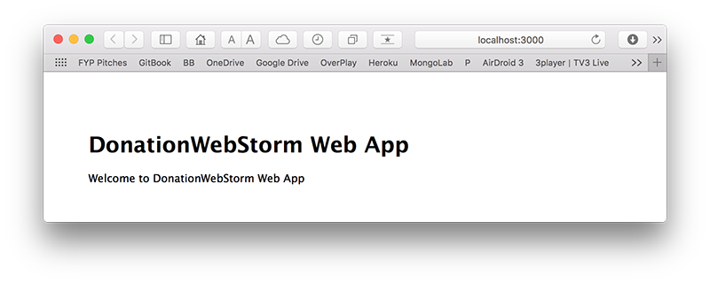
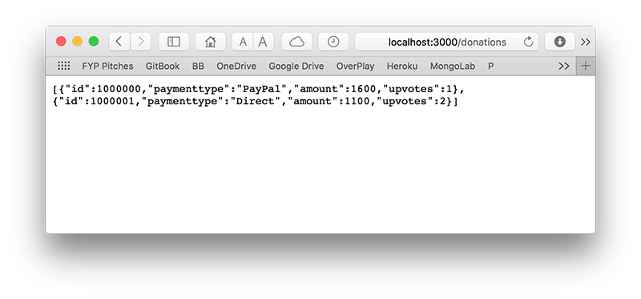
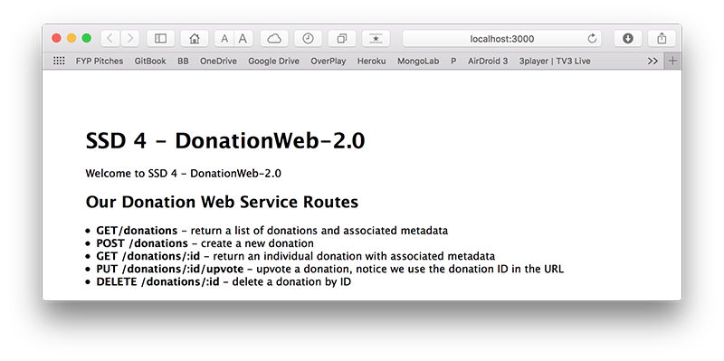
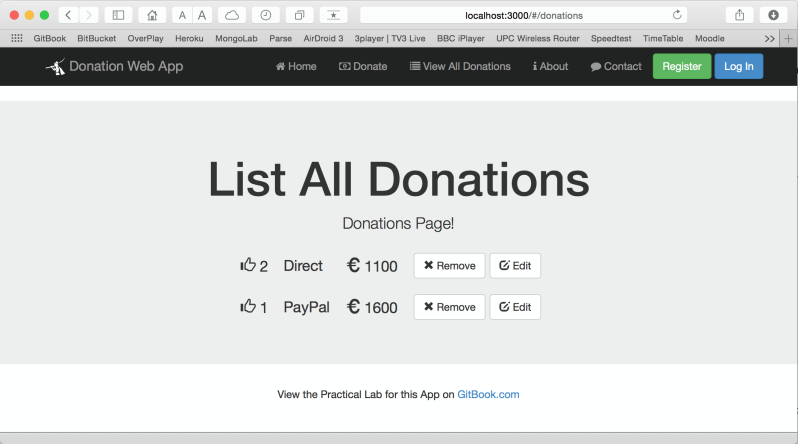
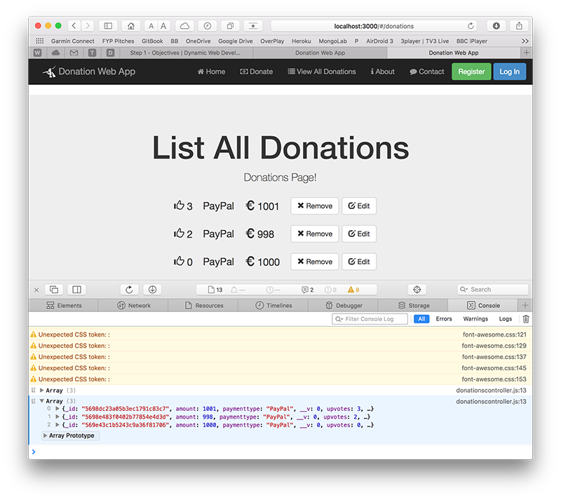
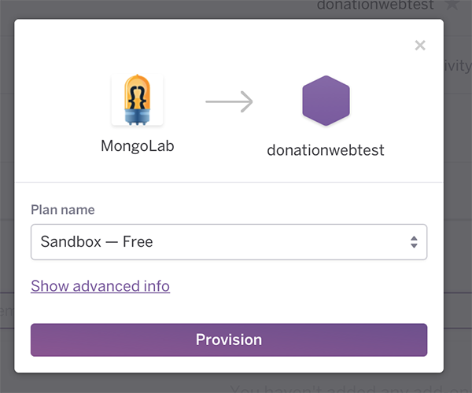

Setup
This is where you can find all the info you need to setup your MEAN build environment.Before you attempt any of the labs, Make sure you have the WebStorm IDE installed and configured. If you want to go 'old school' I'd recommend downloading and installing sublime text to use as your JS editor - you can use any text editor you like, but I'll be using WebStorm for all the labs.You can visit the live site at donationweb.herokuapp.com, to get an idea of what you'll be developing throughout the labs.You can check out the completed web app connected to a mongodb database hosted on mongolab deployed to heroku here donationweb-4-0.herokuapp.com.
Lab-01

In this lab we're going to build a very simple Node Web App using the WebStorm IDE. If you haven't done so already, get it set up by following the WebStorm IDE Setup. This web app won't have much functionality but it will take you through the process of building a Node Web app using WebStorm.Once completed and running, your Node Server Landing Page will be at localhost:3000)
Lab-02

In this lab we will be using our WebStorm IDE to build a simple Node/Express Server to initially act as a Web Service APi for a related Android Mobile App, and eventually it will be our back-end to a full MEAN Stack Web App.
.
Lab-03

In this lab we will be introducing some proper persistence, through a MongoDB backend, and if we have time, deploying our local web server to heroku so that everyone can see our web app!Here's a link to some of the commands you'll be using throughout the lab [QuickLinks] docs.mongodb.org/master/tutorial/getting-started-with-the-mongo-shell/ but most of what we do in this lab we'll have covered in the lectures.
Lab-04

This lab involves building your 1st Angular Web App - Donation 3.0.To begin with, it won't actually do much, but it will give you an introduction to some of the basics of what constitutes an Angular Web App, and set up the navigation we need for all the pages in our existing Donation Web App Server.
Lab-05

This lab involves adding some proper functionality to our Angular Web App - Donation 4.0.In this lab we'll add the ability to make a Donation, list all the Donations and be able to delete an individual Donation.
Deploy-to-Heroku

As a related exercise (and a useful one!) you should complete this lab in the context of your own Node Web App, and deploy your app to Heroku.